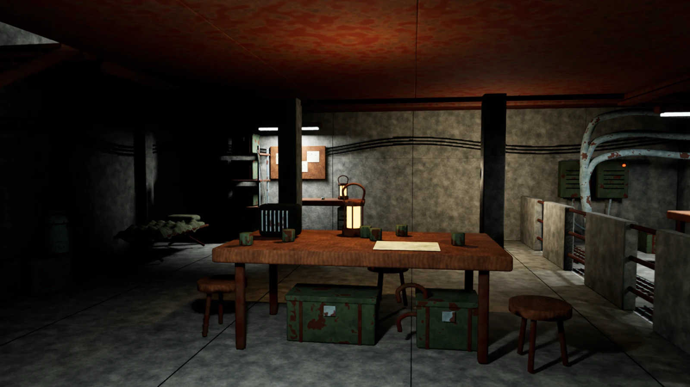
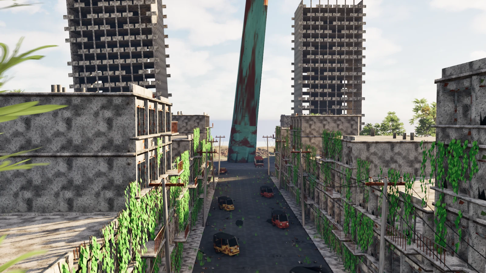
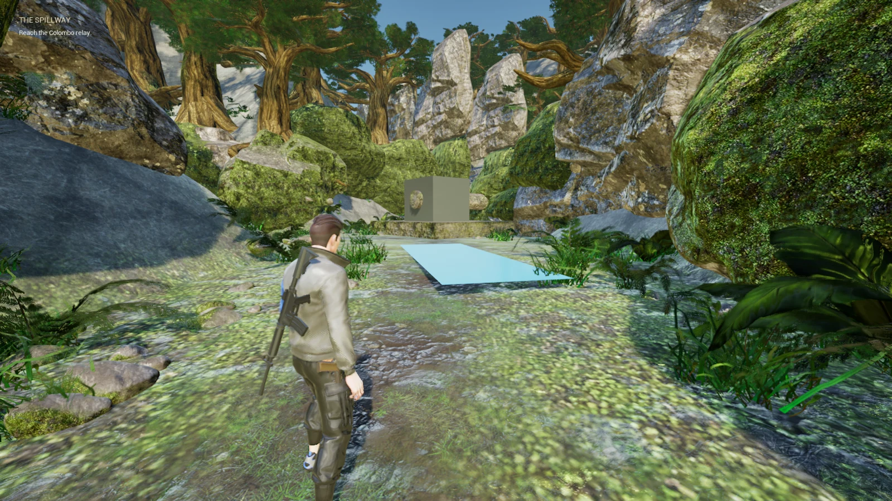
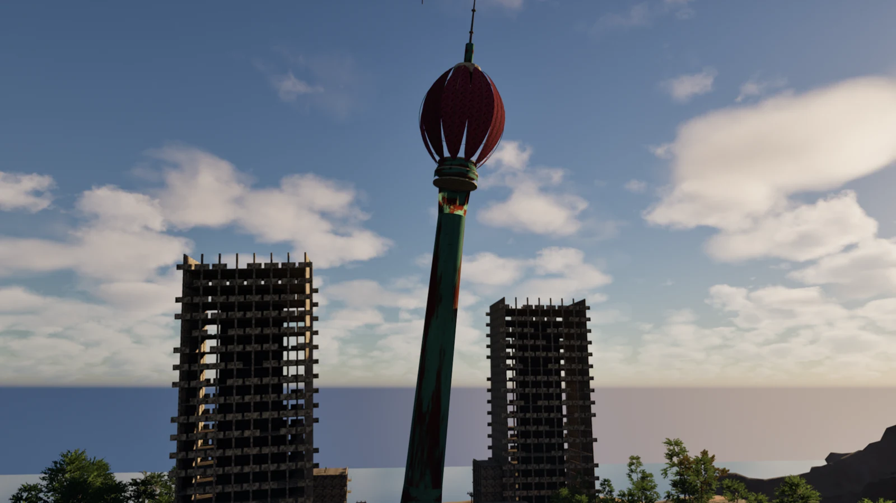

Find your way.
Move through dense jungle, rocky passages, and the remains of an overgrown city.
EXPLORATION
A SINGLE-PLAYER ACTION ADVENTURE
The world fell silent.
But this island isn’t done yet.
01 / THE GAME
SOMEWHERE BETWEEN RUIN AND HOPEBeyond the silence, Sri Lanka still breathes. Nature pushes through concrete. Familiar streets become unfamiliar territory. And every path forward asks something of you.
Serendib Still Breathes is a single-player, third-person action adventure set in post-apocalyptic Colombo. Leave the bunker, cross the wild, and face the city that remains.
Follow the journeyMove through dense jungle, rocky passages, and the remains of an overgrown city.
EXPLORATIONClimb, traverse, and look for a path through an environment that refuses to stand still.
THIRD-PERSON TRAVERSALFace encounters with zombies and hostile survivors as you push deeper into Colombo.
SURVIVAL & ENCOUNTERS02 / THE WORLD
THREE PLACES. ONE WAY FORWARD.Trace the journey from shelter
to the streets of Colombo.

LOCATION 01 / 03IN-ENGINE CINEMATIC CAPTURETHE LAST SIGNAL
A radio. A lantern. A way out. Deep inside the bunker, the outside world feels impossibly far away. This is where the journey begins.
ENVIRONMENTS FROM THE CURRENT BUILD
03 / FIRST CONTACT
A GLIMPSE OF WHAT REMAINS
04 / THROUGH THE LENS
POSTCARDS FROM THE AFTERMATHImages from the current development build. Cinematic captures use staged cameras; gameplay captures show the playable environment. Visuals may change.
05 / FIELD NOTES
FROM INSIDE STUDIO 141
DEVELOPMENT JOURNAL / 001
The journey has three distinct places: the quiet of the bunker, the tangled paths of Jungle Gorge, and the streets of Colombo. Together, they form the world of Serendib Still Breathes.
Our first cinematic trailer follows that same route, using environments and assets from the game project. Explore the locations above, or take a closer look at the screenshots in the media gallery.
Explore the locationsA single-player, third-person action adventure with exploration, traversal, zombies, and hostile survivors, set in a post-apocalyptic Sri Lanka.
The game is in development. A public release date and public download have not been announced. This website showcases the current project.
The current development build is for Windows PC. Other platform plans have not been announced.
Minimum and recommended specifications are still to be confirmed through hardware testing. We will share them once performance targets have been verified.
Yes. The press kit includes a game fact sheet and screenshots. The 30-second cinematic trailer is available as a separate MP4 download below the trailer preview.

THERE’S STILL A STORY HERE.
WINDOWS PC • SINGLE-PLAYER • IN DEVELOPMENT